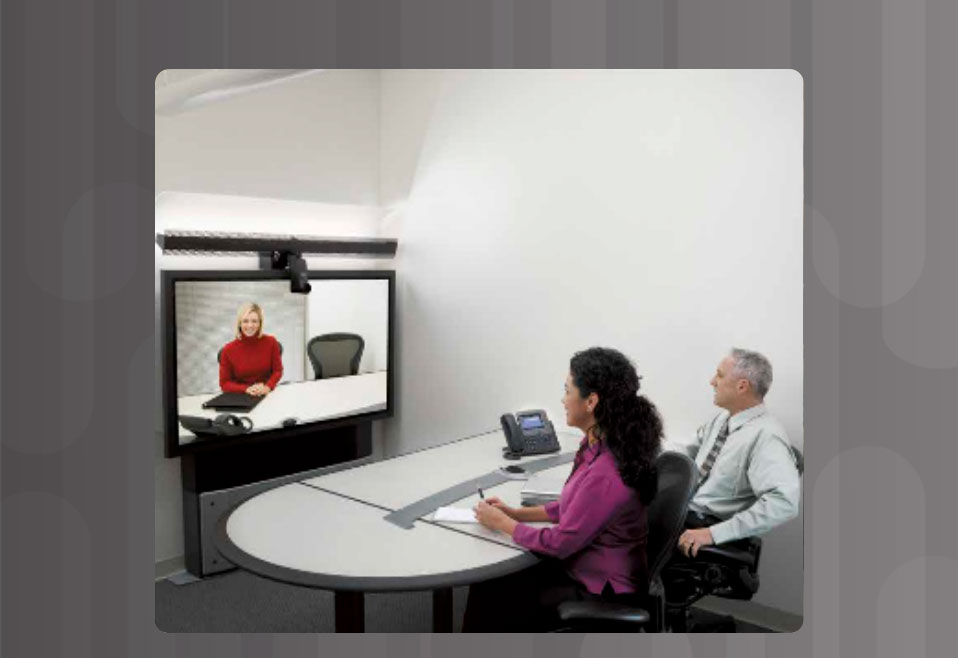

As the course title states, the focus of this course is on the WAN technologies and network services required by converged applications in a complex network. In this course, you will learn the selection criteria of network devices and WAN technologies to meet network requirements. You will do the following:
- Describe different WAN technologies and their benefits
- Configure and troubleshoot PPP
- Configure PPPoE, GRE, and single-homed eBGP
- Configure and troubleshoot extended IPv4 and IPv6 ACLs
- Explain how to mitigate common LAN security attacks
- Describe QoS operation
- Describe evolving networks including cloud, virtualization, SDN, and the Internet of Things
- Troubleshoot end-to-end connectivity in a small to medium-sized business network, using a systematic approach